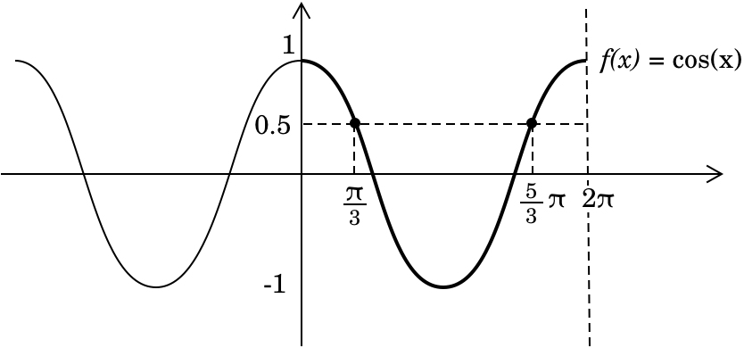
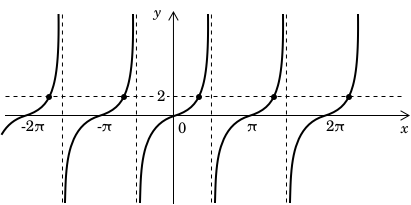

Тригонометричні рівняння: частина 1
Тригонометричні рівняння — це рівняння, у яких невідома змінна виступає як аргумент тригонометричних функцій. Існує кілька типів таких рівнянь, кожне з яких має відповідний метод розв'язання, як описано нижче. У цій першій частині ми розглянемо, як розв'язувати прості тригонометричні рівняння вигляду:
\[ \sin(x) = m, \quad \cos(x) = m , \quad \tan(x) = m, \quad … \]
а також рівняння типу:
\[ \sin[f(x)], \quad \cos[f(x)], \quad \tan[f(x)], \quad … \]
і так далі.
Прості тригонометричні рівняння
Почнемо з найпростіших випадків. Розглянемо, наприклад, рівняння, що містять одну тригонометричну функцію вигляду:
\[\sin(x) = m \tag{1}\]
Щоб розв'язати це рівняння, нам потрібно визначити всі кути \( x \), чий синус дорівнює \( m \). Оскільки функція синуса визначена в області значень \( -1 \leq m \leq 1 \), ця умова має бути виконана; в іншому випадку рівняння не має дійсних розв'язків і вважається неможливим. На одиниковому колі ми можемо візуалізувати це рівняння, провівши горизонтальну пряму \( y = m \), яка перетинає коло у двох точках у першій та другій чвертях, за умови, що \( -1 \leq m \leq 1 \).
Ці точки перетину відповідають двом кутам:
\[ x = \alpha \quad \text{та} \quad x = \pi – \alpha \]
де \( \alpha \) — це опорний кут, такий що \( \sin(\alpha) = m \) у головній області \( [0, \pi] \). Оскільки функція синуса є періодичною з періодом \( 2\pi \), загальний розв'язок можна записати як:
\[ x = \alpha + 2k\pi, \quad x = \pi – \alpha + 2k\pi, \quad k \in \mathbb{Z} \]
де \( k \) — будь-яке ціле число, що враховує періодичну природу функції синуса.
Наприклад, ми хочемо розв'язати рівняння \(\cos x = 1/2\) на проміжку \( [0, 2\pi] \). Побудуємо пряму на рівні значення \(1/2\) на графіку функції косинуса.

З відомих значень косинуса ми пам'ятаємо, що:
\[ \cos\left(\frac{\pi}{3}\right) = \frac{1}{2} \]
Оскільки косинус додатний у першій та четвертій чвертях, два розв'язання на заданому проміжку такі:
\[ x_1 = \frac{\pi}{3}, \quad x_2 = \frac{5\pi}{3} \]
Тепер спробуймо розв'язати рівняння \( \tan x = 2 \). Побудуємо пряму на рівні значення \( 2 \) на графіку функції тангенса.

Щоб визначити розв'язання, спочатку знайдемо головний кут \( x \), такий що:
\[\tan x = 2\]
Оскільки функція тангенса є періодичною з періодом \( \pi \), загальний розв'язок має вигляд:
\[ x = \arctan(2) + k\pi, \quad k \in \mathbb{Z} \]
де \( k \) — будь-яке ціле число, що представляє всі можливі розв'язання.
Коли значення тангенса не є одним із commonly used (загальновживаних), ми можемо застосувати арктангенс — обернену функцію до тангенса — щоб визначити головний кут. Цей підхід дозволяє нам обчислити відповідний кут безпосередньо, не покладаючись на стандартні значення тангенса. Той самий принцип застосовується до інших обернених тригонометричних функцій, таких як arcsin та arccosine, які дозволяють нам знайти відповідні кути для будь-яких заданих значень синуса або косинуса.
Тригонометричні рівняння, що розв'язуються заміною
Іншим прикладом тригонометричних рівнянь є ті, що зазвичай розв'язуються шляхом заміни та мають вигляд:
\[ \sin[f(x)] = m \tag{2} \]
Щоб розв'язати таке рівняння, спочатку переконайтеся, що \( m \) знаходиться в інтервалі \([-1,1]\), який є допустимою областю значень для функції синуса. Потім застосуйте заміну до \( f(x) \), щоб спростити рівняння та легше його розв'язати. Наприклад, розглянемо рівняння
\[ \sin(2x) = \frac{1}{2} \]
Оскільки \(1/2\) знаходиться в допустимій області значень, ми прирівняємо \(2x\) до кутів, синус яких дорівнює \(1/2\). Ми знаємо, що якщо \(\sin(u) = 1/2\), то:
\[ u = \frac{\pi}{6} + 2\pi k \quad \text{або} \quad u = \frac{5\pi}{6} + 2\pi k, \quad k \in \mathbb{Z} \]
Підставляючи \(u = 2x\) у ці вирази, отримаємо:
\[ 2x = \frac{\pi}{6} + 2\pi k \quad \text{або} \quad 2x = \frac{5\pi}{6} + 2\pi k \]
Поділивши обидва рівняння на 2, отримаємо розв'язання для \( x \):
\[ x = \frac{\pi}{12} + \pi k \quad \text{або} \quad x = \frac{5\pi}{12} + \pi k, \quad k \in \mathbb{Z} \]
Приклад
Розв'яжіть рівняння:
\[ \cos(3x + 2) = \frac{1}{\sqrt{2}} \]
Спочатку згадаємо, що \( \cos u = \frac{1}{\sqrt{2}} \) має розв'язання при
\[ u= \frac{\pi}{4} + 2k\pi \quad \text{або} \quad u = -\frac{\pi}{4} + 2k\pi, \quad k \in \mathbb{Z}. \]
Прирівнявши \( 3x + 2 \) до цих розв'язань, отримаємо два рівняння:
\[ 3x + 2 = \frac{\pi}{4} + 2k\pi \]
\[ 3x + 2 = -\frac{\pi}{4} + 2k\pi \]
Віднімаючи \(2\) від обох частин:
\[ 3x = \frac{\pi}{4} – 2 + 2k\pi \]
\[ 3x = -\frac{\pi}{4} - 2 + 2k\pi \]
Поділивши все на 3, знайдемо:
\[ x = \frac{\pi}{12} – \frac{2}{3} + \frac{2k\pi}{3} \]
\[ x = -\frac{\pi}{12} - \frac{2}{3} + \frac{2k\pi}{3}, \quad k \in \mathbb{Z} \]
Таким чином, загальні розв'язання можна записати як:
\[ x = \frac{\pi - 8}{12} + \frac{2k\pi}{3} \]
\[ x = \frac{-\pi - 8}{12} + \frac{2k\pi}{3}, \quad k \in \mathbb{Z} \]
Це представляє всі можливі значення \( x \), що задовольняють задане рівняння.